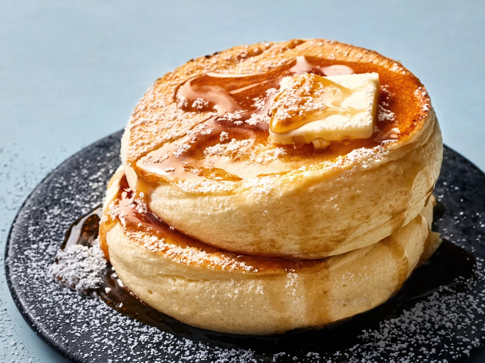

- Смешайте венчиком муку, сахарную пудру, разрыхлитель и соль в большой миске.
Взбейте молоко с растопленным сливочным маслом, ванильным экстрактом и желтком в средней миске до однородности.
- В отдельной большой миске взбейте электрическим миксером на высокой скорости белки с винным камнем до образования устойчивых пиков, примерно 2 мин.
Вмешивайте смесь с молоком в массу с мукой лишь до момента их объединения.
Сделайте то же самое с третью взбитых белков. Затем аккуратно добавьте оставшиеся. Ингредиенты должны лишь объединиться, долго смешивать их не стоит.
- Слегка сбрызните внутренние стенки четырех кольцевых форм кулинарным спреем.
Разогрейте большую сковороду с антипригарным покрытием на среднем огне. Сбрызните кулинарным спреем. Поместите подготовленные кольцевые формы в сковороду и вылейте в каждую из них по 1/2 ст. теста (оно должно заполнять формы примерно наполовину).
Накройте крышкой. Готовьте до тех пор, пока тесто не подымется до краев форм и не подрумянится снизу, примерно 5 мин.
- Подденьте дно панкейков лопаткой. Возьмитесь за края форм щипцами, а затем осторожно переверните. Накройте крышкой и готовьте до подрумянивания с другой стороны, еще примерно 5 мин.
Переместите на тарелку и снимите формы. Подавайте со сливочным маслом и кленовым сиропом. Японские панкейки нужно съесть до того момента, когда они опадут.
- Слегка сбрызните кольцевые формы и неглубокую сковороду кулинарным спреем и повторите все то же самое с оставшимся тестом.
